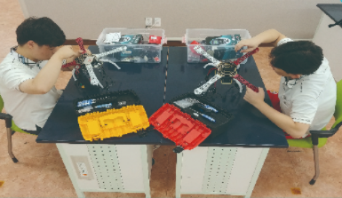

1. 학과 소개
항공드론과는 4차 산업 혁명 시대 핵심 기술의 드론을 NCS기반 교육과정 운영과 도제학교 훈련 프로그램적용으로
급변하는 첨단 산업사회에 성공적인 직업인으로 살아갈 기계분야 기술과 감성을 갖춘 전문인력을 양성한다.
NCS를 기반으로한 교육과정 운영으로 기계, 전기 전자 계열을 기초 과목을 바탕으로 항공기 일반, 소형 무인기 정비
등의 실무 교과를 배움으로써 소형 무인기 운용에 기반이 되는 항공 드론 분야 융합형 인재를 양성하고 4차 산업 혁명
시대에 따른 항공 드론 패러다임 변화에 발맞춰 미래 신산업 신기술 변화에 적절히 대응할 수 있는 교육을 추구한다.
항공 기계, 제어, 시스템 공학을 중심에 두고 연계 분야 (코딩, 모델링, 스마트러닝)기술을 습득함으로써 융합형
인재를 양성하여 취업 경쟁력을 강화하였다.
2. 전공 과목
항공기일반, 전기전자기초, 기초제도, 기계기초공작, 통신일반, 소형무인기정비, 소형무인기운용조종
3. 실습내용
드론 제작, 드론 설계, 드론 코딩(프로그래밍), 드론 정비, 드론 운용, 드론 개발
4. 취득 자격증
국토부 조종자 자격 취득 전원 취득 지원, 국토교통부(초경량 비행장치 무인멀티콥터 조종자, 지도조종자, 실기평가자),
한국산업인력공단(항공기기체정비기능사, 항공전자정비기능사)
5. 출처
-
경기기계공업고등학교 홈페이지